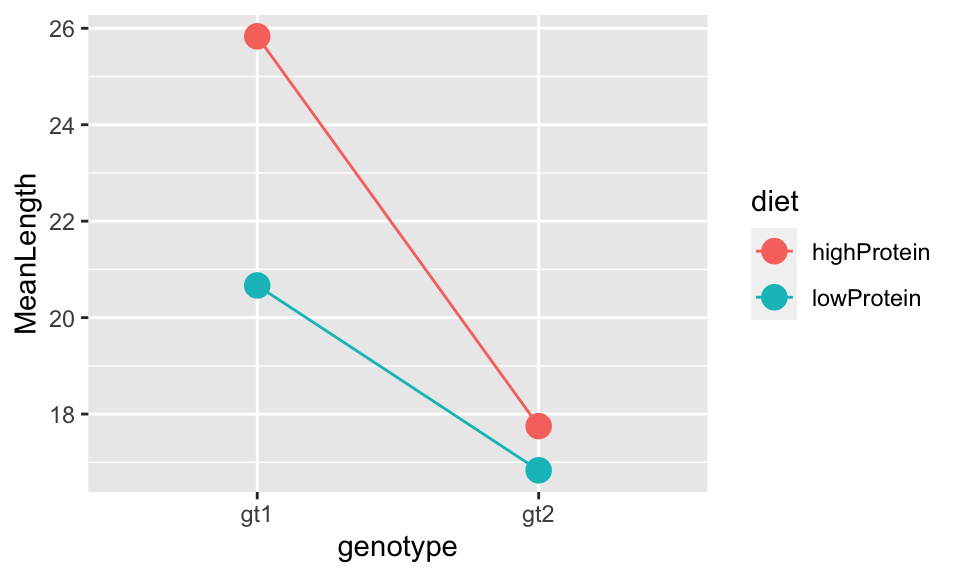

Chapter 11 Linear models with a several categorical explanatory variables
require(tidyverse)
require(ggpubr)11.1 Background
In the one-way ANOVA we covered in the previous worksheet we were interested in understanding the effect of a single categorical explanatory variable with two or more levels on a continuous response variable. Although the explanatory variable must be categorical (i.e. with discrete levels), it could represent a continuous variable. For example, the explanatory variable could be a two-level soil nutrient level (high or low), even though nutrient level is a continuous variable and one could measure the actual quantitative value of nutrients in mg/g.
The two-way ANOVA is an extension of one-way ANOVA that allows you to investigate the effect of two categorical variables. This can be useful in an experimental context.
For example, one might have run an experiment investigating in the effect of two types of diet (lowProtein and highProtein), and genotype (gt1 and gt2), on adult size of a pest species. It is worth thinking about what potential outcomes there are for this experiment. There may be no effect of diet, and no effect of genotype. There may be an effect of one of these variables but not the other. The effect of the diet might be the same for the different genotypes, or it might be different. Some of these different possibile outcomes are illustrated in Figure . the titles indicate with Y (yes) or N (no) whether the figure shows a significant diet, genotype (gt) or interaction (int) effect. The dotted lines joining the estimates for the two genotypes are a kind of interaction plot: where they are parallel, there is no interaction.
Figure 11.1: Some potential results of the experiment. There may be a significant effect (or not) of both of the main effects (diet and genotype) and there may be a significant interaction effect (or not).
In the model we aim to quantify these effects, and ask if they are statistically significant (i.e. if the effect sizes are >0). We divide the effects of the explanatory variables into two types: main effects and interaction effects. The main effects are the overall effect of the explanatory variables (genotype and diet in this case) while the interaction effect allows us to ask whether one main effect depends on another. In this case we are asking whether the effect of diet depends on genotype (and vice versa). Make sure that you understand this important concept.
11.2 Fitting a two-way ANOVA model
Let’s use R to fit a two-way ANOVA model using data from the example I just described. As with one-way ANOVA, you can fit a two-way ANOVA model in R using lm.
First, import the insectDiet.csv data and plot it, to produce a plot like in Figure . From looking at the graph in Figure you can see (a) genotype 1 tends to be larger than genotype 2; (b) insects raised on a high protein diet tend to be larger than those on a low protein diet; and (c) the effect of the diet (i.e. the difference in size between the insects raised on the different diets) is larger for genotype 1 than it is for genotype 2. But are these differences statistically meaningful?
insectDiet <- read.csv("CourseData/insectDiet.csv")
ggplot(insectDiet,aes(x = genotype,y = lengthMM,fill=diet)) +
geom_boxplot() +
xlab("Genotype")+
ylab("Length (mm)")
Figure 11.2: The effect of diet protein content and genotype on adult size of an insect species
To address this question, we will fit a linear model (the two-way ANOVA) to estimate the effects of diet and genotype.
The model formula is lengthMM ~ genotype + diet + genotype:diet.
Let’s try to understand this. The genotype + diet part represents the main effects of these two variables, and the genotype:diet part represents the interaction effect between them. This formulacan be shortened to lengthMM ~ genotype * diet (i.e. this is exactly equivalent to the more complicated-looking formula), but I recommend to use the longer version because it is clearer.
So we fit the model like this - putting the formula first, then telling R which data to use:
mod_A <- lm(lengthMM ~ genotype + diet + genotype:diet, data = insectDiet)Then we can look at diagnostic plots, as with ANOVA etc.:
library(ggfortify)
autoplot(mod_A)
These all look OK. The slightly odd structure in the QQ-plot is caused by the fact that the length data are rounded to the nearest millimeter. There is no evidence of heteroscedasticity (left hand plots) now any major outliers.
11.3 Summarising the model (anova)
Since we are satisfied with the diagnostic plots we can proceed by summarising the model using first anova and then summary.
anova(mod_A)## Analysis of Variance Table
##
## Response: lengthMM
## Df Sum Sq Mean Sq F value Pr(>F)
## genotype 1 426.02 426.02 99.575 7.135e-13 ***
## diet 1 111.02 111.02 25.949 7.064e-06 ***
## genotype:diet 1 54.19 54.19 12.665 0.0009073 ***
## Residuals 44 188.25 4.28
## ---
## Signif. codes: 0 '***' 0.001 '**' 0.01 '*' 0.05 '.' 0.1 ' ' 1This summary Analysis of Variance Table is similar to the ones you have already seen for one-way ANOVA and linear regression. It just has some extra rows because you have extra explanatory variables. It shows you the degrees of freedom for the different terms in the model (all 1, because they have two levels), the sum of squares (Sum Sq) and mean sum of squares (Mean Sq) and the associated F value and p-value (Pr(>F)). Those F values are all large, leading to highly-significant p-values.
This means that all of those terms in the model explain a significant proportion of the variation in insect length.
But as you know, this summary table doesn’t tell you the direction of the effects. The obvious way to understand your data is to simply look at the plot you have already produced. You could also make an interaction plot which is a simplified version of the plot of the raw data.
To do this you first need to create a summary table using dplyr tools summarise and group_by to get the mean and standard errors of the mean:
insectDiet_means <-
insectDiet %>%
group_by(genotype, diet) %>% # <- remember to group by *both* factors
summarise(MeanLength = mean(lengthMM),SELength = sd(lengthMM)/sqrt(n()))
insectDiet_means## # A tibble: 4 x 4
## # Groups: genotype [2]
## genotype diet MeanLength SELength
## <chr> <chr> <dbl> <dbl>
## 1 gt1 highProtein 25.8 0.672
## 2 gt1 lowProtein 20.7 0.527
## 3 gt2 highProtein 17.8 0.698
## 4 gt2 lowProtein 16.8 0.458Then you can make a simple plot of this information by plotting points, and lines joining them:
(A<-ggplot(insectDiet_means,
aes(x = genotype, y = MeanLength, colour = diet, group = diet)) +
geom_point(size = 4) +
geom_line())
You could add error bars to the points by adding a line defining the ymin and ymax values from the data summary like this:
ggplot(insectDiet_means,
aes(x = genotype, y = MeanLength, colour = diet, group = diet,
ymin = MeanLength - SELength, ymax = MeanLength + SELength)) +
geom_point(size = 4) +
geom_line() +
geom_errorbar(width = 0.1)
But are these points statistically significantly different from each other? To answer that question we need to use a post-hoc test
library(agricolae)
HSD.test(mod_A, trt = c("diet", "genotype"), console = TRUE)##
## Study: mod_A ~ c("diet", "genotype")
##
## HSD Test for lengthMM
##
## Mean Square Error: 4.278409
##
## diet:genotype, means
##
## lengthMM std r Min Max
## highProtein:gt1 25.83333 2.329000 12 23 31
## highProtein:gt2 17.75000 2.416797 12 14 22
## lowProtein:gt1 20.66667 1.825742 12 17 24
## lowProtein:gt2 16.83333 1.585923 12 14 19
##
## Alpha: 0.05 ; DF Error: 44
## Critical Value of Studentized Range: 3.775958
##
## Minimun Significant Difference: 2.254643
##
## Treatments with the same letter are not significantly different.
##
## lengthMM groups
## highProtein:gt1 25.83333 a
## lowProtein:gt1 20.66667 b
## highProtein:gt2 17.75000 c
## lowProtein:gt2 16.83333 cThe important part of this output is at the bottom where it tells us Treatments with the same letter are not significantly different.. You can see that the mean lengths between diets for genotype 1 are significantly different (they do not share a letter). However, there is no significant difference between diets for genotype 2 (they share the same letter, c). The two genotypes are also significantly different from each other.
11.4 Summarising the model (summary)
This (above) is generally enough information for a complete write up of results. However, you can ask R to provide the model summary that includes the \(R^2\) values, coefficient estimates and standard errors using summary.
summary(mod_A)##
## Call:
## lm(formula = lengthMM ~ genotype + diet + genotype:diet, data = insectDiet)
##
## Residuals:
## Min 1Q Median 3Q Max
## -3.7500 -1.0417 0.1667 1.2500 5.1667
##
## Coefficients:
## Estimate Std. Error t value Pr(>|t|)
## (Intercept) 25.8333 0.5971 43.264 < 2e-16 ***
## genotypegt2 -8.0833 0.8444 -9.572 2.53e-12 ***
## dietlowProtein -5.1667 0.8444 -6.118 2.26e-07 ***
## genotypegt2:dietlowProtein 4.2500 1.1942 3.559 0.000907 ***
## ---
## Signif. codes: 0 '***' 0.001 '**' 0.01 '*' 0.05 '.' 0.1 ' ' 1
##
## Residual standard error: 2.068 on 44 degrees of freedom
## Multiple R-squared: 0.7585, Adjusted R-squared: 0.742
## F-statistic: 46.06 on 3 and 44 DF, p-value: 1.254e-13The most useful thing shown here is the \(R^2\) value. Because we have several terms in the model we should use the Adjusted R-squared value of 0.742. This indicates that our model explains 74.2% of variation in insect length.
The next bit is not 100% necessary most of the time…
We already have a good idea of the mean values and standard errors for these data look because we calculated them above directly from the data. For completeness though I will now run through the coefficient estimates part of the summary table.
The coefficient Estimates here are interpreted in a similar way to a one-way ANOVA. Again, it is important to know what the reference point is. When you understand this you can reconstruct the mean values for the various levels of the variables that are estimated by the model. You will see that the model estimates lead to precisely the same estimates as obtained from summarising the data.
Here you can see that:
The
(Intercept)is 25.8333 and must refer to the point for genotype 1 on a high protein diet (look at the value of the intercept and compare to the graph/summary table, and/or the output from the Tukey test).The second coefficient (
genotypegt2) is -8.0833 which is the difference between the reference (intercept) and the value for genotype 2 on a high protein diet: (25.8333 + (-8.0833) = 17.75).The third coefficient (
dietlowProtein) is -5.1667 which is the difference between the reference point and for genotype 1 on a low protein diet: (25.8333 + (-5.1667) = 20.6666).The final coefficient
dietlowProtein:genotypegt2is 4.25 and is “interaction effect” of diet and genotype and represents the additional effect of genotype when it is on diet. In other words, in comparison to the reference point (genotype 1 & high protein diet), the effect of a low protein diet is negative (-8.0833), as is the effect of being genotype 2 (-5.1667). However, having both a low protein diet and being genotype 2 leads to an additional positive effect (4.25) on length. The resulting estimate of mean length for genotype 2 on a low protein diet is 25.8333 + (-8.0833) + (-5.1667) + 4.25 = 16.833.
This is a bit complicated so my advice is generally to refer to the figures and the outputs of the Tukey.HSD function to obtain the estimate in the different groups.
The logic and methods of the two-way ANOVA can be extended to produce \(n\)-way ANOVA with \(n\) categorical variables.
11.5 A 2-way ANOVA on a fish behaviour study
11.5.1 Background
Individual differences in animal personality and external appearance such as colouration patterns have both been extensively studied separately. A significant body of research has explored many of pertinent ecological and biological aspects that can be affected by them and their impact upon fitness. Currently little is known about how both factors interact and their effect on reproductive success.
Researchers carried out a study looking at differences in personality and its interaction with colour phenotype in zebrafish (Danio rerio). They used two colour morphs, “homogenous” which has clearly defined lateral stripes, and “heterogenous” which has more variable and less clear patterns.
They also assigned individuals to two personality types which they called “Proactive” (adventurous, risk taking) and “Reactive” (timid, less risk taking). They did this by recording how they explore a new environment
The two variables of interest are:
- Colour pattern (homogenous and heterogenous)
- Personality (proactive and reactive)
The research questions are:
- What is the relative influence of colour pattern and personality? Which is more important?
- How do the variables interact to determine fitness? e.g. do proactive individuals do better than reactive ones, and does this depend on colour pattern? Or some other pattern?
11.5.2 Your task
Import the data set,
fishPersonality.csvPlot the data (e.g. as a box plot)
Fit an ANOVA model using
lm.Look at diagnostic plots from this model (
autoplot)Use
anovato get an Analysis of Variance summary table, and interpret the results.Get the coefficient summary (
summary) and interpret the output.Do post-hoc Tukey tests (e.g. using
HSD.testfrom theagricolaepackage). Interpret the results.Sum up your findings with reference to the initial research questions.